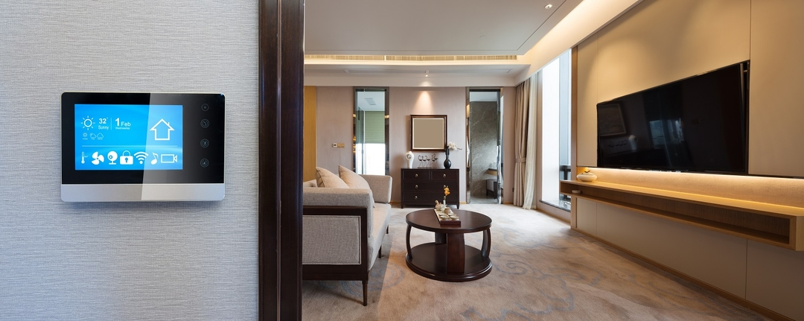

A smart home lifestyle through iDevices products provides an easy and secure way
to control your home's lights, thermostats, and more. Control your connected home products, simply
by using your voice or through your mobile device.
Smart Home Trends for 2021

Imagine you’ve had a long day at the office. You’ve been grinding away all day and now all you
want to do is get home and chill.
You open your smart home app, say “Alexa, I’ve had a long day”, and your smart home takes care of the rest. It
sets your oven to preheat and a vintage Chenin blanc to chill. Your smart bath fills to your perfect depth and
temperature. Soft mood lighting illuminates the room and ambient music fills the air.
After a bad day at the office, your smart home awaits - ready to save the day.
Science fiction? Nope. Welcome to the smart home of today.
Smart home innovations have gone from small steps to one giant leap. 2021 will bring several key trends into
play, trends that are set to change the very concept of what we call ‘home.’
Homes That Learn
The term ‘smart home’ has been around for a while now. Not too long ago, being able to turn up
the thermostat and draw the curtains with a remote control was enough to earn ‘smart’ status. But in 2021, tech
breakthroughs are going to ensure that smart homes are truly smart.
Instead of just reacting to commands and doing what we tell it to do, smart homes can now predict and adapt
based on our preferences and patterns of behavior.
Machine learning and advanced Artificial Intelligence will make it so your home will know that you’ll want to
turn the heating a degree or two before you even realize it. It’ll be able to predict when you’ll run out of a
certain food, based solely on your eating habits. It’ll even be able to offer you suggestions to improve your
home life, from customized recipe ideas and health advice to entertainment tips and workout routines. How’s that
for smart?
Smart Bathrooms
Bluetooth speaker showerheads. Mood-lit mirrors with smart demisters. These are nice little smart
home trends that take the bathroom experience up a notch or two. But the brilliance of smart bathrooms is in the
customization.
Imagine being able to control every detail of your bathroom experience, from the precise temperature of your
daily shower to the depth of your Sunday bath. Even better, imagine each member of the family could have their
settings. Digital showers and bath fillers are making this a reality, and are set to be one of the biggest smart
home trends in 2021. Kohler is producing some incredible stuff – from smart baths and digital showers to
customizable toilet seats.
Smart Kitchens
The smart fridge syncs all your other appliances together. These include smart ovens that know
the precise temperature to cook different types of food. Smart ovens can even adjust the level of doneness
depending on which family member it’s cooking for. You can preheat your oven remotely, so it’s ready to roll
when you get home. Hoover, Bosch, Samsung, and Siemens are all releasing boundary-pushing smart ovens next year.
Smart wine coolers, microwaves, mixers, and pressure cookers can also be controlled remotely, so you can arrive
home with dinner all but served. Let’s not forget kitchen entertainment centers, where you can listen to your
favorite tunes or video call your best friend while cooking, or even follow recipes.
Smart kitchens are now fully integrated areas where incredible technology meets ingenious design, inspiring you
to get next-level creative.
Virtual Assistant Integration
With people increasingly spending more time at home due to the pandemic, AI virtual assistants
are becoming a bigger part of our everyday lives. Just a few years ago, their role was limited to picking the
next song on Spotify. Soon, they’ll be synced with every aspect of the smart home.
Imagine being able to check what food is in the fridge and get alerts when it gets close to its expiry date,
activate your robot vacuum cleaner, turn on the washing machine, send a text message, make dinner reservations
AND pick the next song on Spotify. Just by speaking to your home’s virtual assistant and all without pressing a
single button.
If that’s not enough, 2021 will see the launch of Amazon, Apple, and Google’s Project Connected Home. The idea
is to create a unified open-source smart home platform, meaning that each company’s virtual assistant will be
compatible with any new smart home device.
Next Level Security
Remember those “homes of the future” from back in the day. They’d have 24-hour home surveillance,
but you’d need an entire room to store the tapes. Next year’s security systems will be hooked up to cloud
storage, with endless storage and easy access. Smart locks are also evolving – moving towards fingerprint and
facial recognition technology.
Probably the biggest development in smart home security is drones. Drone cams may seem like something plucked
straight from a sci-fi show, but they’ll soon be patrolling homes all over the world. Amazon’s about to drop a
new security device in 2021 that’s pushing the boundaries on smart home security.
Their new security drone will connect to several sensors around the property. It’ll stay docked when not in use,
but when one of the sensors is triggered, the drones fly to the area to investigate, filming all the while.
Car security is changing too, with the introduction of several devices that connect with your car. Amazon’s Ring
is in the driving seat when it comes to smart security for cars, especially with their innovative car alarm.
When someone tries to tamper or break into your car, the device sends alerts to an app on your phone. No more
waking the neighbors – just a direct security alert.
Mood Makers
Smart lighting is becoming incredibly advanced. Brands including Phillips, Sengled, Eufy, and
Wyze are the brightest of the bunch, lighting the way for the rest to follow.
Smart bulbs can now be controlled by your phone, tablet or smartwatch and can also be activated through voice
commands. You can also set the mood from afar, activating your lights to turn on when you’re on your way home.
Many smart bulbs even have geofencing features, which means they use GPS to pinpoint your location. These smart
lights don’t need activating – they’ll automatically turn on when you’re at a specific point on your journey
home.
You can also customize your lighting for a variety of specific occasions. Different types of mood lighting can
be synced up to your favorite TV shows, automatically detecting audio cues to create a specially designed light
track.
Smart Home Healthcare
Health is at the forefront of our minds, particularly at this moment in time. Fridges that write
your shopping list for you and self-running baths at the perfect temperature are great. But if smart homes are
going to improve our lives, they need to cater to the most important aspects of our lives. And what’s more
important than health?
Everyone can benefit from the next generation trend of smart home healthcare, with sleep and nutritional
monitoring just the beginning. As the tech has advanced, a more nuanced approach to self-care has become
possible.
In 2021, through smartwatches, smart glasses, smart clothing, and smart patches, your home will be able to
monitor your health like never before. For example, smart-sensor embedded clothing can provide data to monitor
cardiac and respiratory health, as well sleep patterns and general physical mobility.
These smart devices will also be able to take this data and suggest ways to improve your mental and physical
wellbeing, as well as making remote patient monitoring a reality.
Smart Home Gyms
With most of us spending much more time at home in the past months due to the pandemic, the smart
home gym revolution comes at the right time.
Coming in the form of giant touchscreen displays – next year will see screens of up to 50 inches (127 cm) –
smart homes gyms are now an entire gym and personal trainer, all in one retractable package.
Virtual personal trainers, live on-demand fitness classes and full-customizable programs have been the standard
for the last few years. Now, fitness devices are becoming genuinely smart, with the ability to monitor the
intricacies of every workout. Sensors monitor every rep, adapting guidance and measuring your progress in real
time. They can even detect when you’re struggling – acting as a ‘virtual spotter’ to help get you to the end of
your set. Next level electromagnetic technology means you can change weight resistance at the flick of a button,
or through a voice prompt.
Smart gym company Tonal are the world’s leaders in smart gyms, with Volava also making waves on the smart home
fitness scene. In this current climate, and with increasingly smart AI-driven technology, smart home gyms
continue to go from strength to strength.
Mesh WiFi
With the increasing number of smart home devices in the home, having one WiFi point in the house
is no longer good enough. Now, for a home to be truly ‘smart’ and able to run more devices simultaneously, wider
coverage is needed. Insert mesh WiFi – an innovative technology that, while not completely new, comes into its
own as smart home devices become increasingly popular. Mesh WiFi technology is a lot smarter than that of a
standard router, using AI to deliver consistent speeds throughout the home.
2021 will be a big year for WiFi, with a whole wave of next-generation technology making a fast, efficient,
fully functioning, and interconnected smart home a reality. Linksys, Netgear, and Ubiquiti are all making
incredible mesh WiFi devices that are taking this technology to new heights.